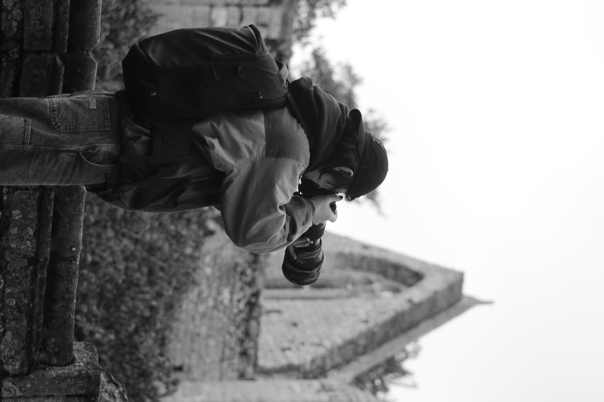

Je m'appelle Sacha G. Alliant la précision visuelle de la photographie à la logique rigoureuse du développement web, je conçois des outils qui simplifient le quotidien sans sacrifier l'esthétique.
Je crois en la puissance du minimalisme. Chaque ligne de code, comme chaque pixel d'une image, doit avoir une raison d'être. Mon objectif est de créer des expériences fluides, rapides et visuellement impeccables.
Photographe amateur depuis plusieurs années, j'ai commencé le développement web en autodidacte pour construire mes propres outils de gestion. Ce qui n'était qu'une curiosité est devenu une véritable passion pour l'architecture logicielle et le design d'interface.
Cette application est née d'un besoin personnel : une interface monochrome inspirée des terminaux, capable de gérer des tâches complexes avec une simplicité déconcertante. C'est un projet en évolution constante.
- Approche Vanilla (HTML/CSS/JS)
- Backend Firebase & Firestore
- GitHub github.com/sacez53
- LinkedIn Profil professionnel